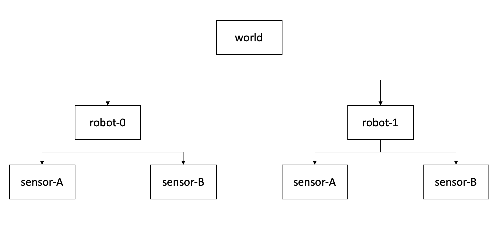

Transformation tree
Overview
To transform points between multiple (moving) actors, it is essential to understand the concept of transformation trees which define the connections between coordinate systems.

Figure 1: Transformation tree for two actors with two sensors each. Each box represents a coordinate system (or frame), each arrow represents the transformation where a parent frame is pointing towards a child frame..
A transformation tree is a directed graph (Fig. 1) with nodes as coordinate systems and transformations between them as vertices. In a nutshell, it is helpful to think of the arrows as "mathematical recipes" converting points from one system to another.
The higher level system is often referred to as a parent frame, the lower level is often called the child frame..
Note that the structure of this graph remains constant over time, even if the mathematical relation between world and vehicle coordinate systems change.
Chaining transformations
Having the relations tracked in the tree diagram it is straightforward to chain transformations together. The matrix notation allows an computationally efficient transformation between multiple coordinate frames, since we can combine multiple transformations into one matrix (Eq. 2.40 from 1):
\[ {}^{A}_C \mathbf T = {}^{A}_B \mathbf T \ {}^{B}_C \mathbf T \]
Applied to the diagram from Fig. 1 this formulation allows us to transform between world and sensor coordinate system with a single operation \(\mathbf T_{world \rightarrow robot0-sensorA}\).
References
1 John Craig, Introduction to Robotics (1989)